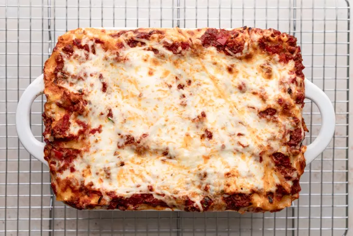

World's Best Lasagna
Description
Everyone loves a good lasagna, right?
It's a great way to feed a crowd and a perfect dish to bring to a potluck.
It freezes well.
It reheats well.
Leftovers will keep you happy for days.
Simply Recipes reader Alton Hoover sent me his favorite recipe for lasagna which he has been cooking since his college days.
Alton's original recipe created enough lasagna for a small army so I halved it. What is posted here will easily serve eight people.
Ingredients
- 2 teaspoons extra virgin olive oil
- 1 pound ground beef chuck
- 1/2 large bell pepper (green, red, or yellow), diced (about 3/4 cup)
- 2 cloves garlic, minced
- 1 (28-ounce)can good-quality tomato sauce
- 3 ounces tomato paste (half a 6-ounce can)
- 1 (14 ounce) can crushed tomatoes
- 2 tablespoons chopped fresh oregano, or 2 teaspoons dried oregano
- 1/4 cup chopped fresh parsley (preferably flat leaf), packed
- 1 tablespoon Italian seasoning
- 1 pinch garlic powder and/or garlic salt
- 1 tablespoon red or white wine vinegar
- 1 tablespoon to 1/4 cup sugar (to taste, optional)
- Salt
Directions
- Put pasta water on to boil
- Put a large pot of salted water (1 Tbsp salt for every 2 quarts of water) on the stovetop on high heat. It can take a while for a large pot of water to come to a boil (this will be your pasta water), so prepare the sauce in the next steps while the water is heating.
- Brown the ground beef
In a large skillet heat 2 teaspoons of olive oil on medium high heat. Add the ground beef and cook until it is lightly browned on all sides.
- Remove the beef with a slotted spoon to a bowl. Drain off all but a tablespoon of fat.
- Browned beef in a skillet to make a lasagne recipe.
Cook the bell pepper, onions, garlic, add back the beef
Add the diced bell pepper and onions to skillet (in the photo we are using yellow bell pepper and red onions).
- Cook for 4 to 5 minutes, until the onions are translucent and the peppers softened. Add the minced garlic and cook half a minute more.
- Return the browned ground beef to the pan. Stir to combine, reduce the heat to low and cook for another 5 minutes.
- Sauteed onions and red peppers in a skillet for a lasagne recipe
Beef, onions, and tomatoes in a skillet to make a lasagna recipe.
Transfer to medium sized pot, add tomatoes and remaining sauce ingredients to build the sauce
Transfer the beef mixture to a medium sized (3- to 4-quart) pot. Add the crushed tomatoes, tomato sauce, and tomato paste to the pot.
- Add the parsley, oregano, and Italian seasonings, adjusting the amounts to taste. Sprinkle with garlic powder and/or garlic salt, to taste.
Sprinkle with red or white wine vinegar. Stir in sugar, a tablespoon at a time, tasting after each addition, to taste. (The amount of sugar needed will vary, depending on how acidic the tomatoes are that you are using.)
- Add salt to taste, and note that you will later be adding Parmesan, which is salty.
- Bring the sauce to a simmer and then lower the heat to maintain a low simmer. Cook for 15 to 45 minutes, stirring often. Scrape the bottom of the pot every so often so nothing sticks to the bottom and scorches.
- Bring the sauce to a simmer and then lower the heat to maintain a low simmer. Cook for 15 to 45 minutes, stirring often. Scrape the bottom of the pot every so often so nothing sticks to the bottom and scorches.

Return to top
return to home page